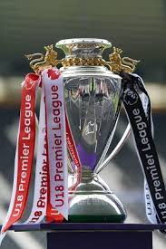

Competiciones
Premier league
Esta es la liga principal, donde 20 equipos compiten entre sí a lo largo de la temporada para ganar el título de campeón de Inglaterra.

FA Cup
Es la copa nacional de fútbol más antigua del mundo. En ella participan equipos de todas las ligas del fútbol inglés, desde los profesionales de la Premier League hasta los aficionados. Esto a menudo permite emocionantes encuentros entre equipos de diferentes niveles.

EFL Cup (Carabao Cup)
Es otra copa nacional, pero en esta solo participan los 92 equipos de las cuatro ligas profesionales de Inglaterra (Premier League, Championship, League One y League Two).

Community Shield
Es un partido que se juega al inicio de cada temporada entre el campeón de la Premier League y el ganador de la FA Cup. Sirve como el inicio oficial de la temporada futbolística en Inglaterra.

U18 Premier League
Esta es la liga para los equipos juveniles (menores de 18 años) de los clubes de la Premier League, ayudando a desarrollar a las futuras estrellas.
